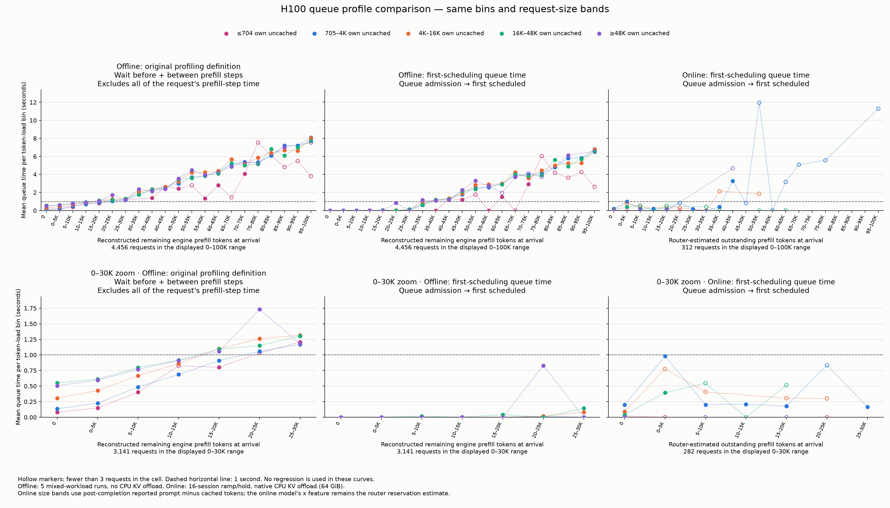
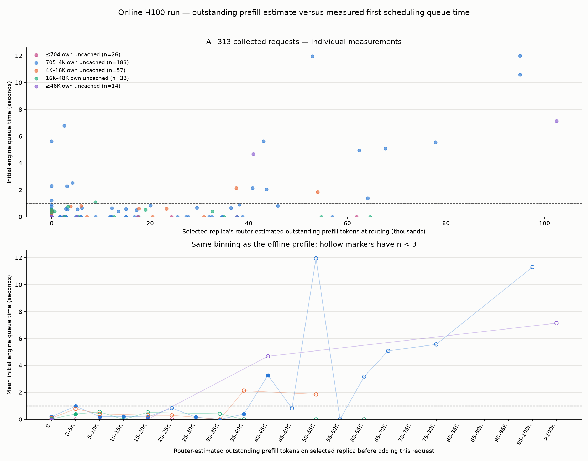
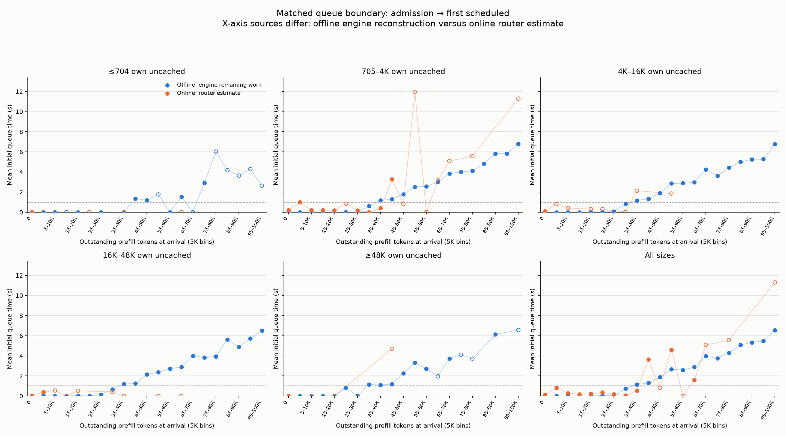

Offline versus online H100 queue profiles
313 online requests; 5290 offline requests.
- Online x: selected replica's undecayed router reservations before incoming request admission; excludes the incoming request.
- Offline x: existing trace reconstruction of actual remaining uncached prefill work at scheduler arrival; excludes the incoming request.
- Original offline y: engine TTFT minus the full measured duration of every prefill step involving this request, including its first step. Counts waiting before and between its prefill steps, plus any residual engine overhead not assigned to those steps; these are scheduler batch wall-time measurements, not isolated CUDA kernel timings.
- Aligned offline y: trace request_admitted.queue_wait_ms, stopping at first scheduling. Online y: native vLLM scheduled_ts minus queued_ts.
- Online engine scheduler traces were disabled; actual remaining engine work and total inter-chunk queue time cannot be reconstructed for this run.
- Online own-size bands are post-hoc ISL minus server-reported cached prompt tokens; these are grouping labels, not the model feature.
- Offline profiles include side probes and different offered load; online is one 16-session ramp/hold. Offline no CPU KV offload; online native 64 GiB CPU KV offload.
- Offline preempted requests excluded, matching the original profiling plot. All online collected samples retained, without a preemption exclusion because none was captured in their audit schema.
All online points (CSV) · Offline points (CSV) · Bin statistics and counts · Provenance
Original and aligned comparison
Open PNG · PDF
Every online sample
Open PNG · PDF
Aligned queue time by request size
Open PNG · PDF